Every photo here is a project completed by Joshua and the JR Sash Solutions team — from bay rebuilds to ironmongery details, bespoke joinery to heritage glass. Seven years of craft, all in one place.
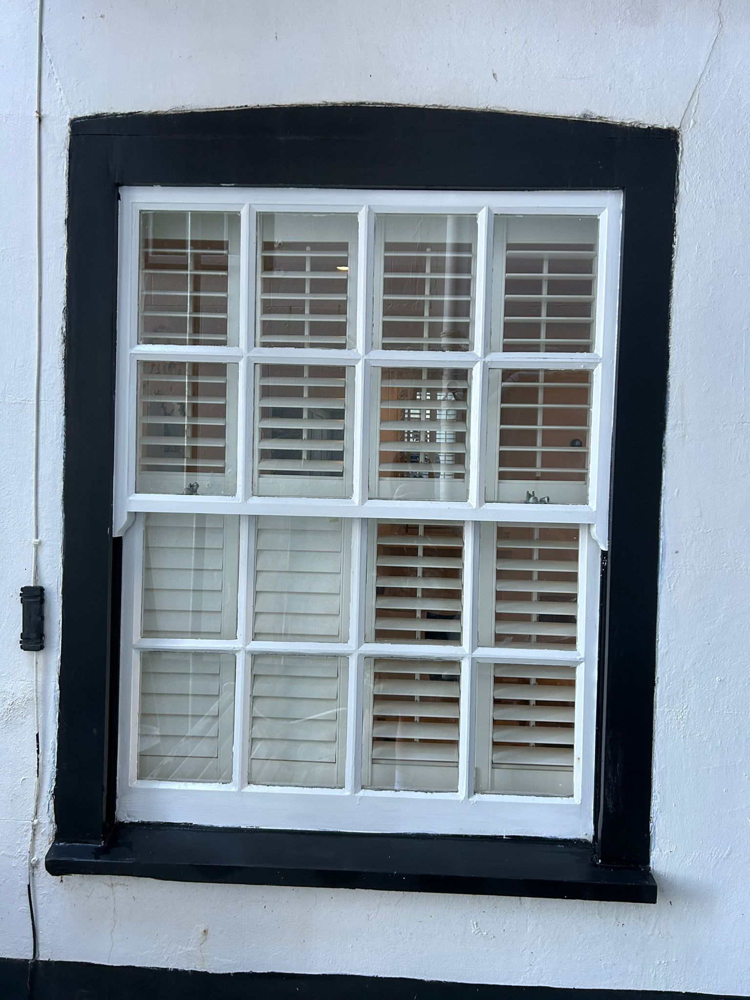
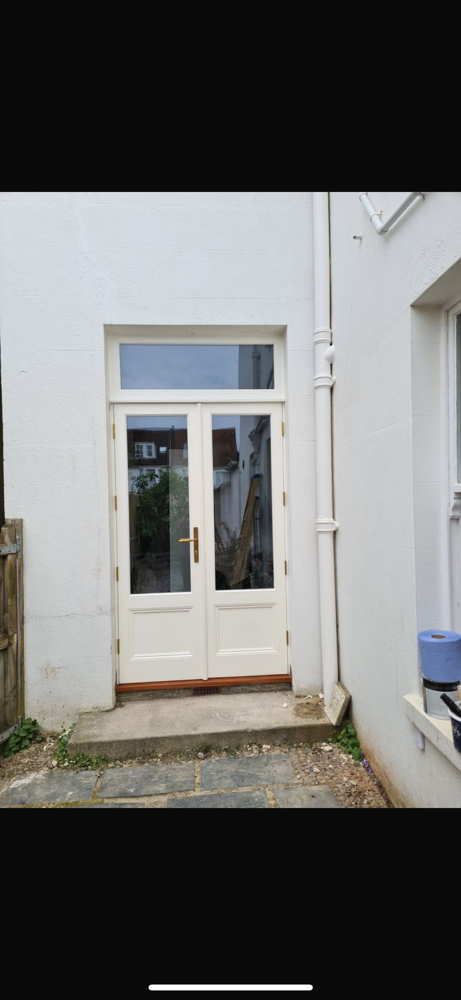
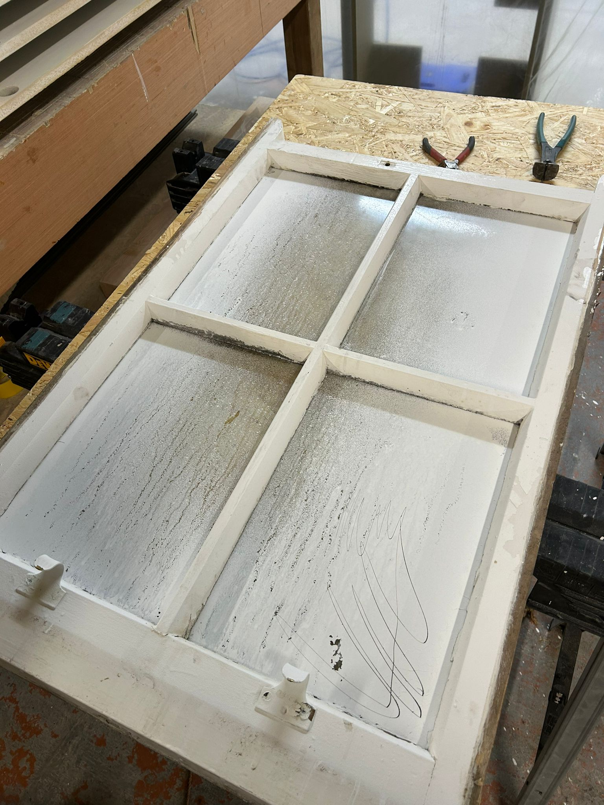
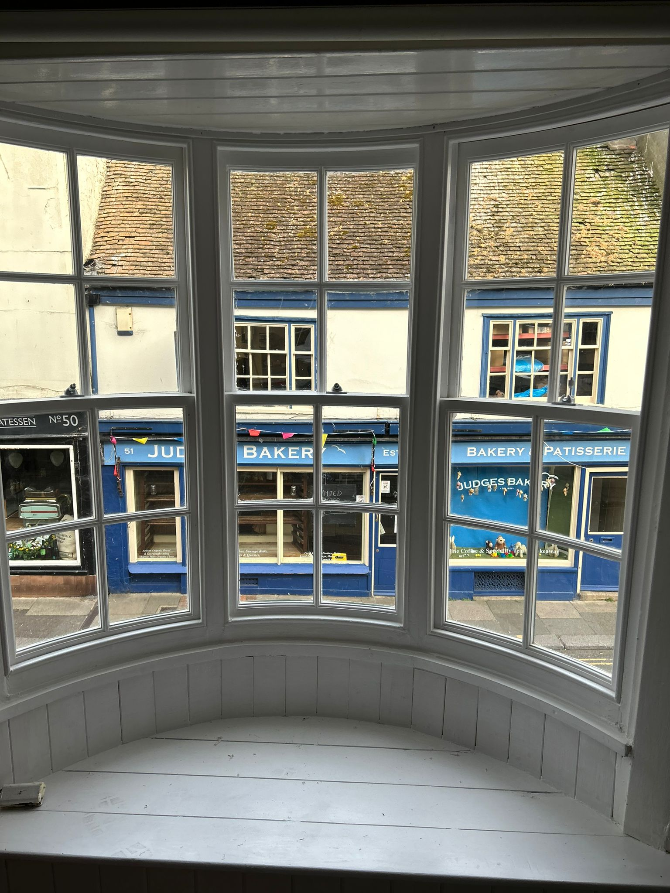
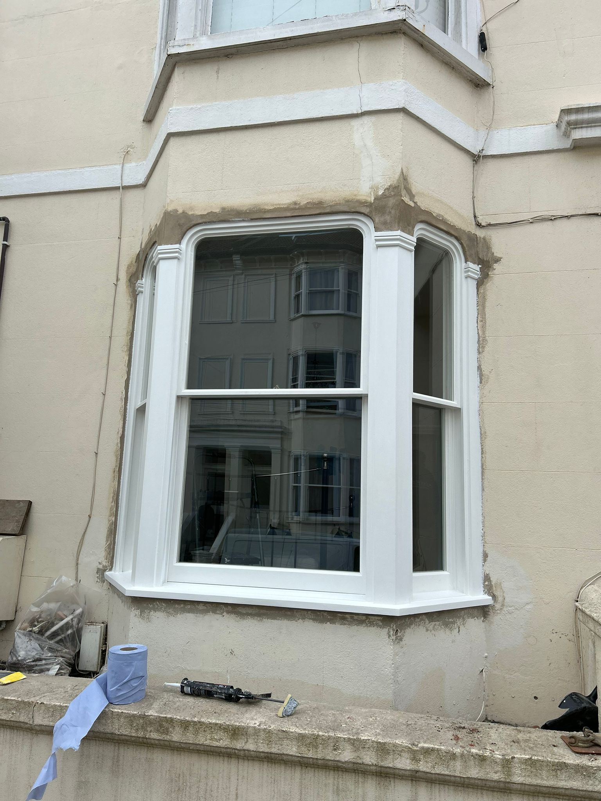
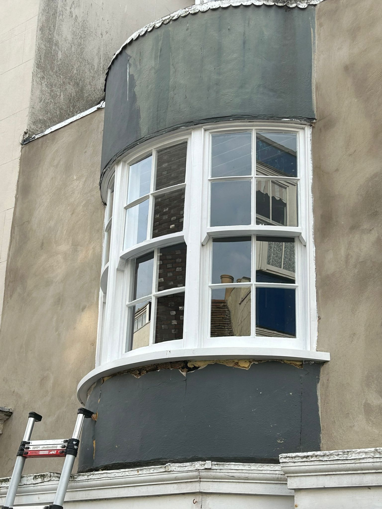
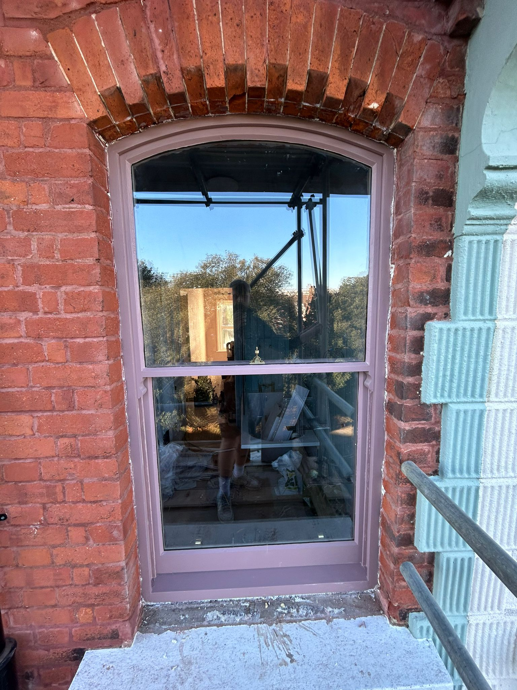
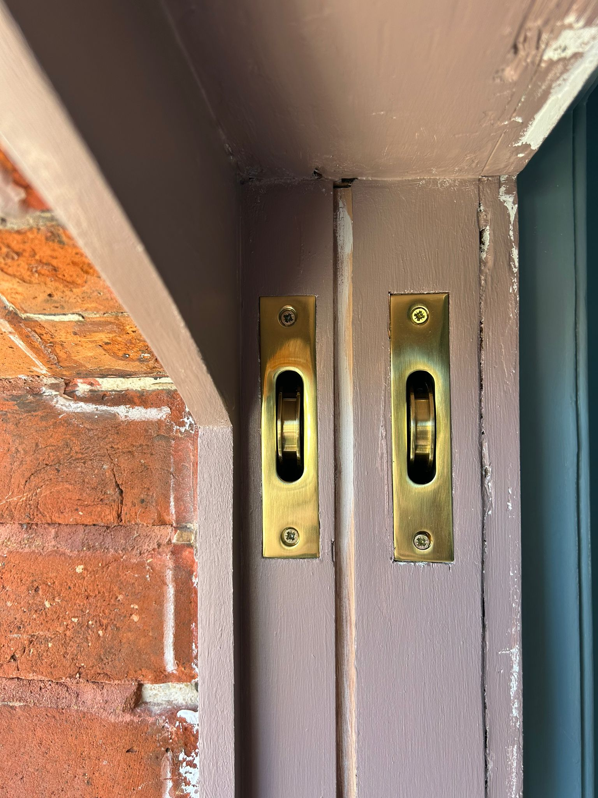
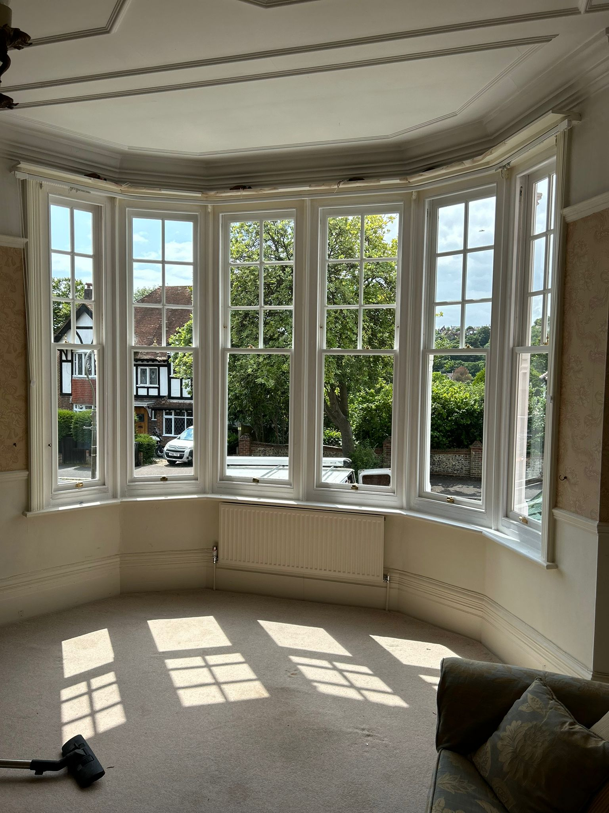
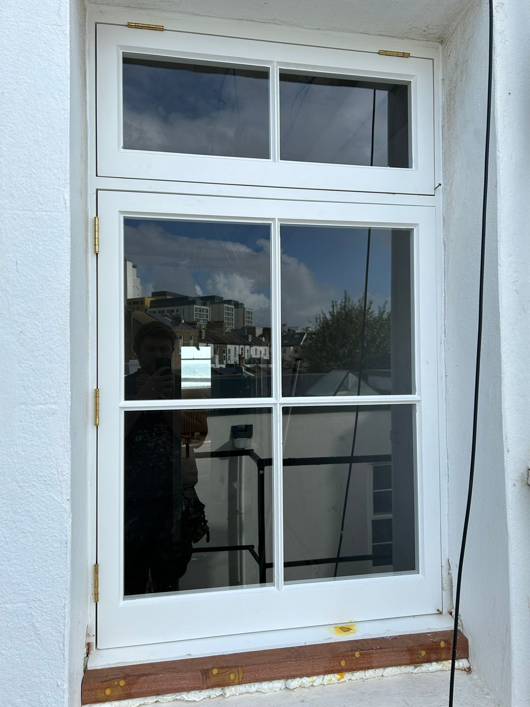
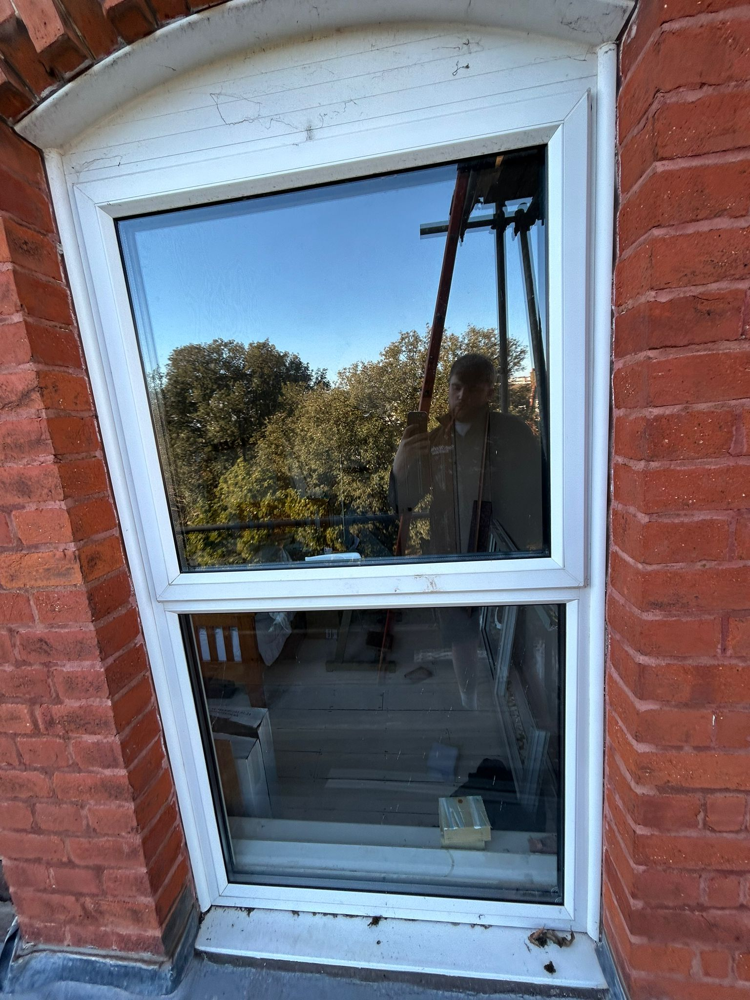
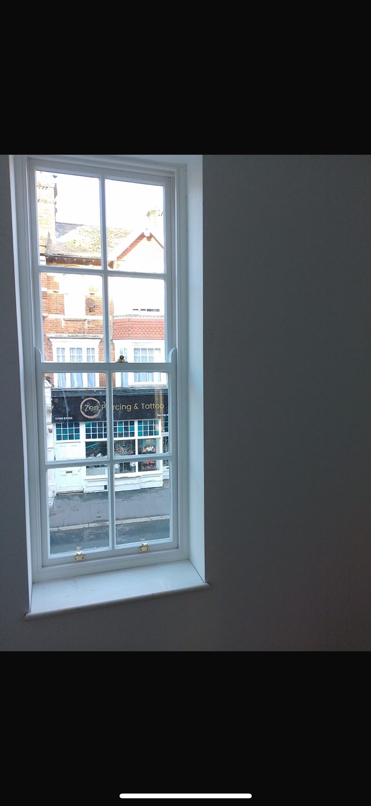
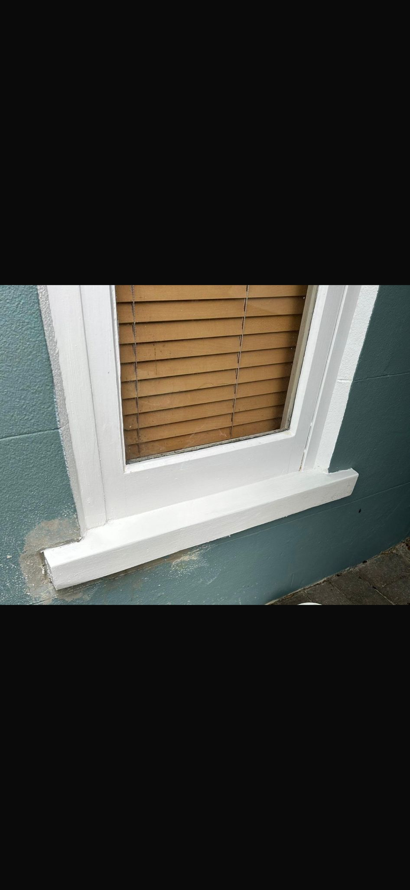
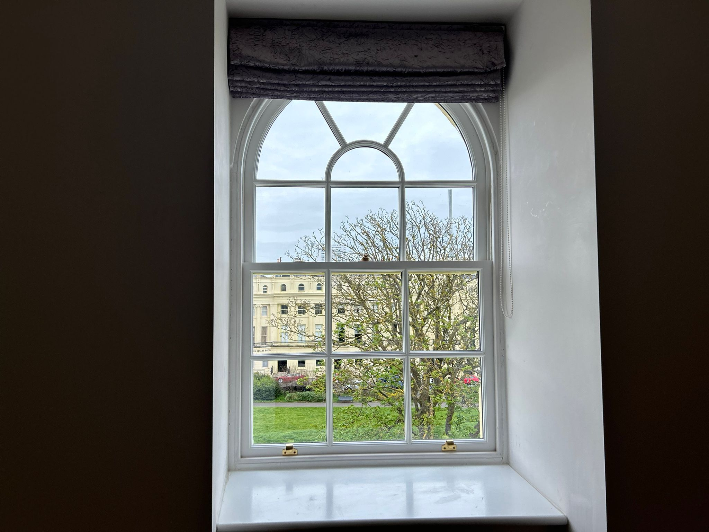
I'm Josh — I'm 25 and I've been fitting sash windows for 7 years, trained with two of the most reputable companies in the trade where standards were extremely high. In that time I've experienced everything from simple glass changes all the way to full bay rebuilds.
I also offer new joinery that can be exactly like-for-like to suit conservation areas, allowing you to have double glazing while keeping the history of your home intact.
Every job I take on gets the same care and attention — whether it's a single cord replacement or a complete period restoration. Thanks for taking the time to look through my work.
Kind regards, Josh
I'm really happy with the work Josh at JR Sash Solutions did on my sash windows. He got both of them back to full working order and they now open and close smoothly and look much better. He was professional throughout, worked efficiently, and left everything clean and tidy when he finished.
Josh restored four sash windows (including new hardwood sills) and completely replaced another large window with brand new joinery. All work was done to an extremely high standard at a fair price and in good time and, most importantly, in a way that fully preserved the character of the windows.
Josh did a great job for me. He replaced the wood surrounds on my traditional sash windows and replaced sills. Where possible he scraped out rotten wood and filled with resin. He always had an eye on the most cost effective solution for me. I'd highly recommend his work.